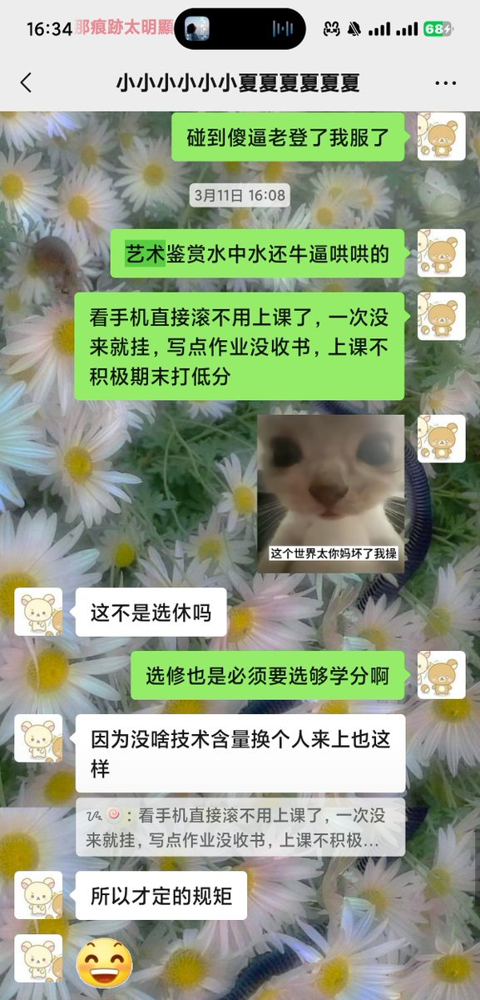
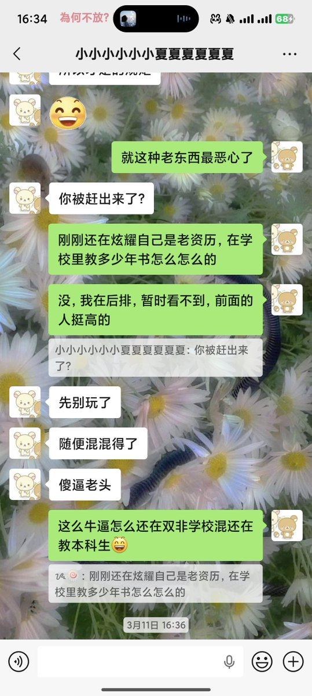

Rusndage小雪花❄️🍥
@RusndageSNF
@Starrynightwglf 这老师不三拳教做人？


风🎐
@Starrynightwglf
就刚刚两个同学被叫上台记名字然后赶出教室了....直接挂...
太恶心了所有水课都应该去死
我的生命就是被形势与政策艺术鉴赏思想政治军事理论大学生创业指导这种课浪费掉的
上课是必跑题吹牛逼的，管的是最严的，最后一排是必被赶到前面的，平时分是故意给低的，爹味是最重的🙄 https://t.co/asQpA7Hw1K